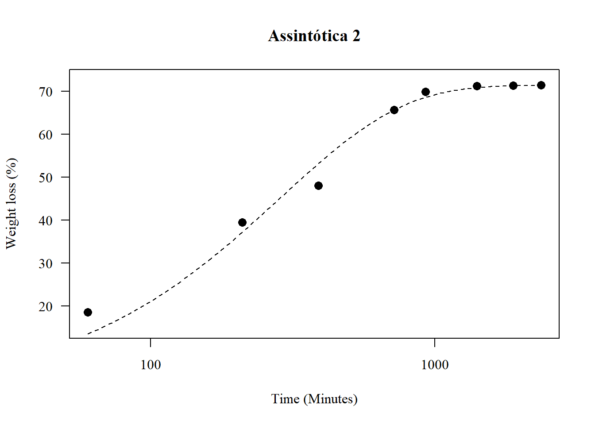

33 Análise de regressão linear e não-linear
Nas mais diversas áreas da pesquisa, seja ela na área médica, biológica, industrial, química entre outras, é de grande interesse verificar se duas ou mais variáveis estão relacionadas de alguma forma. Para expressar esta relação é muito importante estabelecer um modelo matemático. Este tipo de modelagem é chamado de regressão, e ajuda a entender como determinadas variáveis influenciam outra variável, ou seja, verifica como o comportamento de uma ou mais variáveis podem mudar o comportamento de outra.
Na agronomia, a análise de regressão é muito utilizada por exemplo, para estabelecer doses de máxima resposta de produtos fitossanitários, adubos, populações de plantas, etc..; ou mesmo no estudo do desenvolvimento de uma planta, o que chamamos de curva de crescimento.
Popularmente, é comum a utilização de curva do tipo polinomial, visto a facilidade de sua utilização e explicação. Todavia, muito dos dados não se comportam dessa forma, ainda que o ajuste seja significativo, podendo assim, levar a conclusões limitadas em função da análise inadequada. Logo, o presente tutorial apresenta diferentes ajustes de regressão linear e não-linear de um mesmo conjunto de dados.
Neste tutorial, você irá reparar que em quase todos os modelos, o coeficientes serão significativos, demonstrando que quase todos os modelos são válidos para explicar o comportamento dos dados. A questão é, qual o melhor modelo?

Obs. Este é um tutorial para demonstração dos modelos de regressão. Alguns casos ele não é significativo ou uma das pressuposições não é atendida. É um tutorial apenas para fins didáticos.
33.1 Conjunto de dados
O conjunto de dados é de um experimento cujo objetivo foi avaliar a perda de massa da casca de romã em estufa a \(60^oC\). Foi utilizado oito repetições em oito avaliações (60, 210,390, 720, 930, 1410, 1890 e 2370 minutos)
`PERDA DE MASSA CAA`=c(18.15810,17.99376,14.81450,15.39822,21.62234,20.45106,18.65319,20.96547,36.77274,39.92503,34.60874,35.70286,43.57189,42.19460,39.23367,43.36169,52.90384,52.64886,45.61431,47.81200,44.41734,47.40493,46.15373,47.12330,65.29474,67.78859,64.60738,66.24453,63.97464,66.77636,65.37446,65.11912,67.86385,70.68877,69.45271,70.33895,69.43583,71.56150,69.73480,69.97407,69.02813,71.28882,71.17485,71.22420,71.32344,72.46687,71.17063,72.07550,69.16576,71.44176,71.30762,71.34075,71.42775,72.59710,71.28255,72.19996,69.30339,71.59471,71.44040,71.45729,71.53206,72.72733,71.39446,72.32441)
TEMPO=rep(c(60,210,390,720,930,1410,1890,2370),e=8)
dados=data.frame(TEMPO,`PERDA DE MASSA CAA`)
y=c(`PERDA DE MASSA CAA`)
x=c(TEMPO)
data=data.frame(y,x)33.1.1 Média e desvio-padrão amostral
## 60 210 390 720 930 1410 1890 2370
## 18.50708 39.42140 48.00979 65.64748 69.88131 71.21905 71.34541 71.47176## 60 210 390 720 930 1410 1890 2370
## 2.485224 3.479257 3.133973 1.229025 1.080134 1.007882 1.004939 1.002227## [1] 60 210 390 720 930 1410 1890 237033.1.2 Gráficos exploratórios


33.1.6 Gráfico de linhas com as médias

33.2 Linear Simples
O modelo de regressão linear simples (MRLS) se define uma relação linear entre a variável dependente e uma variável independente.
\[Y=\beta_1x+\beta_0\]
33.2.1 Criando o modelo de regressão
##
## Call:
## lm(formula = y ~ x)
##
## Residuals:
## Min 1Q Median 3Q Max
## -24.4181 -8.1253 0.4191 8.8542 16.0914
##
## Coefficients:
## Estimate Std. Error t value Pr(>|t|)
## (Intercept) 38.099512 2.368998 16.08 < 2e-16 ***
## x 0.018886 0.001876 10.07 1.15e-14 ***
## ---
## Signif. codes: 0 '***' 0.001 '**' 0.01 '*' 0.05 '.' 0.1 ' ' 1
##
## Residual standard error: 11.62 on 62 degrees of freedom
## Multiple R-squared: 0.6205, Adjusted R-squared: 0.6144
## F-statistic: 101.4 on 1 and 62 DF, p-value: 1.147e-1433.2.2 Diagnóstico
33.2.3 Normalidade dos erros
## Gaussian model (lm object)
##
## Shapiro-Wilk normality test
##
## data: resid(modl)
## W = 0.94067, p-value = 0.00407933.2.4 Falta de ajuste (Desvio da regressão)
## Analysis of Variance Table
##
## Model 1: y ~ x
## Model 2: y ~ as.factor(x)
## Res.Df RSS Df Sum of Sq F Pr(>F)
## 1 62 8377.2
## 2 56 236.7 6 8140.5 321.02 < 2.2e-16 ***
## ---
## Signif. codes: 0 '***' 0.001 '**' 0.01 '*' 0.05 '.' 0.1 ' ' 133.2.5 Construindo gráfico
par(family="serif")
plot(media~tempo, main="Linear Simples",
las=1, cex=1.3,
ylab="Weight loss (%)", xlim=c(0,2500),
xlab="Time (Minutes)",
pch=16, ylim=c(0,80))
curve(coef(modl)[1]+coef(modl)[2]*x, add=TRUE, lty=2)
legend("topleft",
cex=1,
bty="n",
legend = c(expression(hat(Y)==38.09951+0.01889*x)))

33.3 Quadrático
\[Y=\beta_2x^2+\beta_1x+\beta_0\]
33.3.1 Criando modelo de regressão
##
## Call:
## lm(formula = y ~ x + I(x^2))
##
## Residuals:
## Min 1Q Median 3Q Max
## -11.428 -5.288 1.756 4.360 8.018
##
## Coefficients:
## Estimate Std. Error t value Pr(>|t|)
## (Intercept) 2.226e+01 1.528e+00 14.57 <2e-16 ***
## x 6.763e-02 3.367e-03 20.09 <2e-16 ***
## I(x^2) -2.055e-05 1.371e-06 -14.99 <2e-16 ***
## ---
## Signif. codes: 0 '***' 0.001 '**' 0.01 '*' 0.05 '.' 0.1 ' ' 1
##
## Residual standard error: 5.415 on 61 degrees of freedom
## Multiple R-squared: 0.919, Adjusted R-squared: 0.9163
## F-statistic: 345.9 on 2 and 61 DF, p-value: < 2.2e-1633.3.2 Diagnóstico do modelo
33.3.3 Normalidade dos erros
## Gaussian model (lm object)
##
## Shapiro-Wilk normality test
##
## data: resid(mod1)
## W = 0.92285, p-value = 0.00065533.3.4 Fator de inflação de variância (Multicolinearidade)
## x I(x^2)
## 14.84834 14.8483433.3.5 Falta de ajuste (Desvio da regressão)
## Analysis of Variance Table
##
## Model 1: y ~ x + I(x^2)
## Model 2: y ~ as.factor(x)
## Res.Df RSS Df Sum of Sq F Pr(>F)
## 1 61 1788.55
## 2 56 236.68 5 1551.9 73.438 < 2.2e-16 ***
## ---
## Signif. codes: 0 '***' 0.001 '**' 0.01 '*' 0.05 '.' 0.1 ' ' 133.3.6 Construindo gráfico
par(family="serif")
plot(media~tempo, main="Quadrático",
las=1, cex=1.3,
ylab="Weight loss (%)", xlim=c(0,2500),
xlab="Time (Minutes)",
pch=16, ylim=c(0,80))
curve(coef(mod1)[1]+coef(mod1)[2]*x+coef(mod1)[3]*x^2, add=TRUE, lty=2)
legend("topleft",
cex=1,
bty="n",
legend = c(expression(hat(Y)==22.26+0.006763*x-0.00002055*x^2)))
33.3.7 Ponto de máximo (Ou mínimo)
O ponto de máximo ou mínimo podem ser encontrados de várias formas
33.3.8 Manualmente
## x
## 1645.317## (Intercept)
## 77.8947533.3.9 Usando o which.max ou which.min
## [1] 1653.9
33.4 Cúbico
\[Y=\beta_3x^3+\beta_2x^2+\beta_1x+\beta_0\]
33.4.1 Construindo o modelo
##
## Call:
## lm(formula = y ~ x + I(x^2) + I(x^3))
##
## Residuals:
## Min 1Q Median 3Q Max
## -6.0186 -1.3299 -0.3928 1.3155 8.0377
##
## Coefficients:
## Estimate Std. Error t value Pr(>|t|)
## (Intercept) 1.406e+01 9.927e-01 14.16 <2e-16 ***
## x 1.174e-01 4.125e-03 28.47 <2e-16 ***
## I(x^2) -7.536e-05 4.189e-06 -17.99 <2e-16 ***
## I(x^3) 1.524e-08 1.149e-09 13.27 <2e-16 ***
## ---
## Signif. codes: 0 '***' 0.001 '**' 0.01 '*' 0.05 '.' 0.1 ' ' 1
##
## Residual standard error: 2.753 on 60 degrees of freedom
## Multiple R-squared: 0.9794, Adjusted R-squared: 0.9784
## F-statistic: 951.1 on 3 and 60 DF, p-value: < 2.2e-1633.4.2 Diagnóstico do modelo
33.4.3 Normalidade dos erros
## Gaussian model (lm object)
##
## Shapiro-Wilk normality test
##
## data: resid(mod2)
## W = 0.94796, p-value = 0.00909333.4.4 Fator de inflação de variância (Multicolinearidade)
## x I(x^2) I(x^3)
## 86.25922 536.46498 221.2516433.4.5 Falta de ajuste (Desvio da regressão)
## Analysis of Variance Table
##
## Model 1: y ~ x + I(x^2) + I(x^3)
## Model 2: y ~ as.factor(x)
## Res.Df RSS Df Sum of Sq F Pr(>F)
## 1 60 454.60
## 2 56 236.68 4 217.93 12.891 1.666e-07 ***
## ---
## Signif. codes: 0 '***' 0.001 '**' 0.01 '*' 0.05 '.' 0.1 ' ' 133.4.6 Construindo o gráfico
par(family="serif")
plot(media~tempo, main="Cúbico",
las=1, cex=1.3,
ylab="Weight loss (%)", xlim=c(0,2500),
xlab="Time (Minutes)",
pch=16, ylim=c(0,80))
curve(coef(mod2)[1]+coef(mod2)[2]*x+coef(mod2)[3]*x^2+coef(mod2)[4]*x^3, add=TRUE, lty=2)
legend("topleft",
cex=1,
bty="n",
legend = c(expression(hat(Y)==14.06+0.01174*x-0.00007536*x^2+0.00000001524*x^3)))
33.4.7 ponto de máximo, mínimo e inflexão
plot(media~tempo)
curva=curve(coef(mod2)[1]+coef(mod2)[2]*x+coef(mod2)[3]*x^2+coef(mod2)[4]*x^3, add=TRUE, lty=2)# ponto de inflexão
pi=-(2*coef(mod2)[3])/(3*2*coef(mod2)[4])
# ponto de máximo anterior ao ponto de inflexão
xmax=curva$x[which.max(curva$y[curva$x<pi])]
# ponto de mínimo posterior ao ponto de inflexão
xmin=curva$x[which.max(curva$y[curva$x<pi])+which.min(curva$y[curva$x>xmax])]plot(media~tempo)
curva=curve(coef(mod2)[1]+coef(mod2)[2]*x+coef(mod2)[3]*x^2+coef(mod2)[4]*x^3, add=TRUE, lty=1)
abline(v=c(xmax,xmin,pi),lty=2)
33.5 Logarítmico
\[Y=\beta_{0}+\beta_{1}\log(x)\]
33.5.1 Construindo modelo
##
## Call:
## lm(formula = y ~ log(x))
##
## Residuals:
## Min 1Q Median 3Q Max
## -8.5359 -3.5194 -0.5506 3.6366 8.4348
##
## Coefficients:
## Estimate Std. Error t value Pr(>|t|)
## (Intercept) -42.7285 3.3261 -12.85 <2e-16 ***
## log(x) 15.5158 0.5096 30.45 <2e-16 ***
## ---
## Signif. codes: 0 '***' 0.001 '**' 0.01 '*' 0.05 '.' 0.1 ' ' 1
##
## Residual standard error: 4.724 on 62 degrees of freedom
## Multiple R-squared: 0.9373, Adjusted R-squared: 0.9363
## F-statistic: 927.1 on 1 and 62 DF, p-value: < 2.2e-1633.5.2 Diagnóstico do modelo
## Gaussian model (lm object)
##
## Shapiro-Wilk normality test
##
## data: resid(modelog)
## W = 0.94476, p-value = 0.006371
33.6 Michaelis-Menten (MM)
\[Y=\frac{A\times x}{V+x}\]
33.6.1 Construindo o modelo
data=data.frame(y,x)
n0 <- nls(formula=y~A*x/(V+x), data=data,
start=list(A=max(y), V=100), trace=TRUE)## 2726.427 : 72.72733 100.00000
## 820.4424 : 78.84265 179.59765
## 691.338 : 80.90678 212.88993
## 690.8008 : 81.02471 215.24858
## 690.8006 : 81.02129 215.20409
## 690.8006 : 81.02137 215.20519##
## Formula: y ~ A * x/(V + x)
##
## Parameters:
## Estimate Std. Error t value Pr(>|t|)
## A 81.021 1.004 80.67 <2e-16 ***
## V 215.205 11.711 18.38 <2e-16 ***
## ---
## Signif. codes: 0 '***' 0.001 '**' 0.01 '*' 0.05 '.' 0.1 ' ' 1
##
## Residual standard error: 3.338 on 62 degrees of freedom
##
## Number of iterations to convergence: 5
## Achieved convergence tolerance: 3.035e-0733.6.2 Diagnóstico do modelo
##
## Shapiro-Wilk normality test
##
## data: resid(n0)
## W = 0.9717, p-value = 0.148233.6.3 Construindo o gráfico
A <- coef(n0)[1]; V <- coef(n0)[2]
par(family="serif")
plot(media~tempo, main="Michaelis Menten",
las=1, cex=1.3,
ylab="Weight loss (%)", xlim=c(0,2500),
xlab="Time (Minutes)",
pch=16, ylim=c(0,80))
curve(A*x/(V+x), add=TRUE, lty=2)
legend("topleft",
cex=1,
bty="n",
legend = c(expression(hat(Y)==frac(81.021*x,(215.205+x)))))
33.6.4 Utilizando outro método
## Nonlinear regression model
## model: y ~ SSmicmen(x, Vm, K)
## data: data
## Vm K
## 81.02 215.20
## residual sum-of-squares: 690.8
##
## Number of iterations to convergence: 0
## Achieved convergence tolerance: 2.047e-06plot(media~tempo, main="Michaelis-Menten",
las=1, cex=1.3,
ylab="Weight loss (%)", xlim=c(0,2500),
xlab="Time (Minutes)",
pch=16, ylim=c(0,80))
curve((81.02135*x)/(215.20499+x), add=T)
33.7 MM Modificado
\[Y=\frac{A\times x}{V+x}+D\times x \]
33.7.1 Construindo modelo
data=data.frame(y,x)
n1 <- nls(formula=y~A*x/(V+x)+D*x, data=data,
start=list(A=max(y), V=100,D=10), trace=TRUE)## 10206286603 : 72.72733 100.00000 10.00000
## 802.0047 : 8.061554e+01 1.857416e+02 -9.194725e-04
## 545.3405 : 91.710079373 263.748404929 -0.004630648
## 521.8705 : 96.954052340 297.103221016 -0.006224234
## 521.0745 : 98.085315801 303.935203239 -0.006567869
## 521.0613 : 98.241471280 304.881731574 -0.006617559
## 521.0611 : 98.261118528 305.001695810 -0.006623916
## 521.0611 : 98.263575225 305.016711452 -0.006624713##
## Formula: y ~ A * x/(V + x) + D * x
##
## Parameters:
## Estimate Std. Error t value Pr(>|t|)
## A 98.263575 4.439290 22.135 < 2e-16 ***
## V 305.016711 25.778649 11.832 < 2e-16 ***
## D -0.006625 0.001563 -4.239 7.73e-05 ***
## ---
## Signif. codes: 0 '***' 0.001 '**' 0.01 '*' 0.05 '.' 0.1 ' ' 1
##
## Residual standard error: 2.923 on 61 degrees of freedom
##
## Number of iterations to convergence: 7
## Achieved convergence tolerance: 9.342e-0633.7.2 Construindo gráfico
A <- coef(n1)[1]; V <- coef(n1)[2]; D<-coef(n1)[3]
par(family="serif")
plot(media~tempo, main="Michaelis Menten (Corrigido)",
las=1, cex=1.3,
ylab="Weight loss (%)", xlim=c(0,2500),
xlab="Time (Minutes)",
pch=16, ylim=c(0,80))
curve(A*x/(V+x)+D*x, add=TRUE, lty=2)
legend("topleft",
cex=1,
bty="n",
legend = c(expression(hat(Y)==frac(98.263572*x,(305.016698+x))-0.006625*x)))
33.8 Segmentada linear
\[Y=\beta_{1}X+\beta_{0} (if\leq X_1)\]
33.8.1 Construindo o modelo linear
##
## Call:
## lm(formula = y ~ x)
##
## Residuals:
## Min 1Q Median 3Q Max
## -24.4181 -8.1253 0.4191 8.8542 16.0914
##
## Coefficients:
## Estimate Std. Error t value Pr(>|t|)
## (Intercept) 38.099512 2.368998 16.08 < 2e-16 ***
## x 0.018886 0.001876 10.07 1.15e-14 ***
## ---
## Signif. codes: 0 '***' 0.001 '**' 0.01 '*' 0.05 '.' 0.1 ' ' 1
##
## Residual standard error: 11.62 on 62 degrees of freedom
## Multiple R-squared: 0.6205, Adjusted R-squared: 0.6144
## F-statistic: 101.4 on 1 and 62 DF, p-value: 1.147e-1433.8.2 Construindo o modelo segmentado
library(segmented)
modelo_pieciwise<- segmented(modelo_linear, seg.Z = ~x, psi=1000)
modelo_pieciwise## Call: segmented.lm(obj = modelo_linear, seg.Z = ~x, psi = 1000)
##
## Meaningful coefficients of the linear terms:
## (Intercept) x U1.x
## 15.94664 0.08803 -0.08524
##
## Estimated Break-Point(s):
## psi1.x
## 585.2##
## ***Regression Model with Segmented Relationship(s)***
##
## Call:
## segmented.lm(obj = modelo_linear, seg.Z = ~x, psi = 1000)
##
## Estimated Break-Point(s):
## Est. St.Err
## psi1.x 585.22 24.498
##
## Meaningful coefficients of the linear terms:
## Estimate Std. Error t value Pr(>|t|)
## (Intercept) 15.946644 1.251665 12.74 <2e-16 ***
## x 0.088028 0.004850 18.15 <2e-16 ***
## U1.x -0.085239 0.004921 -17.32 NA
## ---
## Signif. codes: 0 '***' 0.001 '**' 0.01 '*' 0.05 '.' 0.1 ' ' 1
##
## Residual standard error: 3.205 on 60 degrees of freedom
## Multiple R-Squared: 0.9721, Adjusted R-squared: 0.9707
##
## Convergence attained in 2 iter. (rel. change 0)33.8.3 Definindo limite com base no platô
33.8.4 Curva do primeiro segmento
##
## Call:
## lm(formula = y1 ~ x11)
##
## Residuals:
## Min 1Q Median 3Q Max
## -6.414 -3.174 -0.520 2.435 9.139
##
## Coefficients:
## Estimate Std. Error t value Pr(>|t|)
## (Intercept) 15.946644 1.854475 8.599 1.74e-08 ***
## x11 0.088028 0.007186 12.250 2.67e-11 ***
## ---
## Signif. codes: 0 '***' 0.001 '**' 0.01 '*' 0.05 '.' 0.1 ' ' 1
##
## Residual standard error: 4.749 on 22 degrees of freedom
## Multiple R-squared: 0.8721, Adjusted R-squared: 0.8663
## F-statistic: 150.1 on 1 and 22 DF, p-value: 2.673e-1133.8.5 Construindo gráfico
par(pch=16,las=1); par(family="serif")
plot(media~tempo,
las=1, cex=1.3, main="Segmentado Linear",
ylab="Weight loss (%)", xlim=c(0,2500),
xlab="Time (Minutes)",
pch=16, ylim=c(0,80))
a=curve(coef(mod)[1]+coef(mod)[2]*x,
to=modelo_pieciwise$psi[2], lty=2,add=T)
plato=a$y[round(a$x,3)==round(modelo_pieciwise$psi[2],3)]
lines(c(modelo_pieciwise$psi[2],max(x)),
c(plato,plato),lty=2)
legend("topleft",
cex=1,
legend=expression(hat(Y)==19.836817+0.066839*x~("if"~x~"<"~751.4)), bty="n")
33.9 Segmentada quadrático
\[Y=\beta_{2}X^2+\beta_{1}X+\beta_{0} (if\leq X_1)\]
33.9.1 Construindo o modelo quadrático
##
## Call:
## lm(formula = y ~ x + I(x^2))
##
## Residuals:
## Min 1Q Median 3Q Max
## -11.428 -5.288 1.756 4.360 8.018
##
## Coefficients:
## Estimate Std. Error t value Pr(>|t|)
## (Intercept) 2.226e+01 1.528e+00 14.57 <2e-16 ***
## x 6.763e-02 3.367e-03 20.09 <2e-16 ***
## I(x^2) -2.055e-05 1.371e-06 -14.99 <2e-16 ***
## ---
## Signif. codes: 0 '***' 0.001 '**' 0.01 '*' 0.05 '.' 0.1 ' ' 1
##
## Residual standard error: 5.415 on 61 degrees of freedom
## Multiple R-squared: 0.919, Adjusted R-squared: 0.9163
## F-statistic: 345.9 on 2 and 61 DF, p-value: < 2.2e-1633.9.2 Construindo o modelo segmentado
## Call: segmented.lm(obj = modelo_linear)
##
## Meaningful coefficients of the linear terms:
## (Intercept) x I(x^2) U1.x
## 1.580e+01 9.004e-02 -4.424e-06 -7.368e-02
##
## Estimated Break-Point(s):
## psi1.x
## 560.2##
## ***Regression Model with Segmented Relationship(s)***
##
## Call:
## segmented.lm(obj = modelo_linear)
##
## Estimated Break-Point(s):
## Est. St.Err
## psi1.x 560.234 28.392
##
## Meaningful coefficients of the linear terms:
## Estimate Std. Error t value Pr(>|t|)
## (Intercept) 1.580e+01 1.201e+00 13.151 <2e-16 ***
## x 9.004e-02 4.718e-03 19.083 <2e-16 ***
## I(x^2) -4.424e-06 1.764e-06 -2.508 0.0149 *
## U1.x -7.368e-02 6.596e-03 -11.171 NA
## ---
## Signif. codes: 0 '***' 0.001 '**' 0.01 '*' 0.05 '.' 0.1 ' ' 1
##
## Residual standard error: 3.073 on 59 degrees of freedom
## Multiple R-Squared: 0.9748, Adjusted R-squared: 0.973
##
## Convergence attained in 2 iter. (rel. change 0)33.9.3 Valores para o primeiro segmento
Obs. No caso do linear simples, podemo usar apenas os pontos abaixo do platô, no caso do segmentado quadrático aconselho englobar o ponto acima do acusado no platô. No meu caso é o ponto 930.
##
## Call:
## lm(formula = y1 ~ x11 + I(x11^2))
##
## Residuals:
## Min 1Q Median 3Q Max
## -5.5773 -2.1731 0.0432 1.2608 8.0591
##
## Coefficients:
## Estimate Std. Error t value Pr(>|t|)
## (Intercept) 1.357e+01 1.379e+00 9.839 7.13e-12 ***
## x11 1.175e-01 7.321e-03 16.047 < 2e-16 ***
## I(x11^2) -6.173e-05 7.151e-06 -8.632 2.15e-10 ***
## ---
## Signif. codes: 0 '***' 0.001 '**' 0.01 '*' 0.05 '.' 0.1 ' ' 1
##
## Residual standard error: 3.293 on 37 degrees of freedom
## Multiple R-squared: 0.9715, Adjusted R-squared: 0.97
## F-statistic: 630.9 on 2 and 37 DF, p-value: < 2.2e-1633.9.4 Construindo o gráfico
par(pch=16,las=1); par(family="serif")
plot(media~tempo, main="Segmentado Quadrático",
las=1, cex=1.3,
ylab="Weight loss (%)", xlim=c(0,2500),
xlab="Time (Minutes)",
pch=16, ylim=c(0,80))
maximo=-coef(mod)[2]/(2*coef(mod)[3])
a=curve(coef(mod)[1]+coef(mod)[2]*x+coef(mod)[3]*x^2,
to=maximo, lty=2,
add=T)
plato=a$y[round(a$x,3)==round(maximo,3)]
lines(c(maximo,max(x)),
c(plato,plato),lty=2)
legend("topleft",
legend=expression(Y==13.57+0.1175*x-0.00006173*x^2~("if"~x~"<"~951.5095)), bty="n")
33.10 Mitscherlich
\[Y=A \times(1-exp((B\times C)-(C \times X)\]
##
## Formula: y ~ A * (1 - exp((B * C) - (C * x)))
##
## Parameters:
## Estimate Std. Error t value Pr(>|t|)
## A 7.232e+01 5.606e-01 129.004 < 2e-16 ***
## B -4.438e+01 8.610e+00 -5.155 2.9e-06 ***
## C 2.874e-03 1.302e-04 22.066 < 2e-16 ***
## ---
## Signif. codes: 0 '***' 0.001 '**' 0.01 '*' 0.05 '.' 0.1 ' ' 1
##
## Residual standard error: 2.63 on 61 degrees of freedom
##
## Number of iterations to convergence: 7
## Achieved convergence tolerance: 8.634e-07par(pch=16,las=1); par(family="serif")
plot(media~tempo,main="Mitscherlich",
las=1, cex=1.3,
ylab="Weight loss (%)", xlim=c(0,2500),
xlab="Time (Minutes)",
pch=16, ylim=c(0,80))
b=summary(modelo2)
A=b$coefficients[1,1]
B=b$coefficients[2,1]
C=b$coefficients[3,1]
a=curve(A*(1-exp((B*C)-(C*x))),lty=2,add=T)
legend("topleft",expression(Y==72.31912*(1-e^{(-44.382759*0.002873)-(0.002873*x)})),bty="n")
33.11 Logística de 3 termos
\[Y = \frac{d}{1+exp(b(x-e))}\]
## Carregando pacotes exigidos: MASS##
## 'drc' has been loaded.## Please cite R and 'drc' if used for a publication,## for references type 'citation()' and 'citation('drc')'.##
## Attaching package: 'drc'## The following objects are masked from 'package:stats':
##
## gaussian, getInitial##
## Model fitted: Log-logistic (ED50 as parameter) with lower limit at 0 (3 parms)
##
## Parameter estimates:
##
## Estimate Std. Error t-value p-value
## b:(Intercept) -1.058194 0.062275 -16.992 < 2.2e-16 ***
## d:(Intercept) 79.599836 1.684582 47.252 < 2.2e-16 ***
## e:(Intercept) 208.408451 12.445682 16.745 < 2.2e-16 ***
## ---
## Signif. codes: 0 '***' 0.001 '**' 0.01 '*' 0.05 '.' 0.1 ' ' 1
##
## Residual standard error:
##
## 3.340759 (61 degrees of freedom)par(family="serif")
plot(model,main="Logístico LL.3",
las=1, cex=1.3,
ylab="Weight loss (%)",
xlab="Time (Minutes)",
pch=16,lty=2)
legend("topleft",
legend=expression(hat(Y)==frac(79.599836,
1+exp(-1.058194(x-208.408455)))), bty="n")
33.11.1 ED, DL ou EC
##
## Estimated effective doses
##
## Estimate Std. Error
## e:1:10 26.131 2.755##
## Estimated effective doses
##
## Estimate Std. Error
## e:1:50 208.408 12.446##
## Estimated effective doses
##
## Estimate Std. Error
## e:1:90 1662.2 267.433.12 Logística de 4 termos
\[Y = c-\frac{d-c}{1+exp(b(x-e))}\]
##
## Model fitted: Log-logistic (ED50 as parameter) (4 parms)
##
## Parameter estimates:
##
## Estimate Std. Error t-value p-value
## b:(Intercept) -1.6960 0.1552 -10.9279 6.668e-16 ***
## c:(Intercept) 15.1899 1.9728 7.6995 1.597e-10 ***
## d:(Intercept) 74.5348 1.0697 69.6796 < 2.2e-16 ***
## e:(Intercept) 289.3971 16.5292 17.5082 < 2.2e-16 ***
## ---
## Signif. codes: 0 '***' 0.001 '**' 0.01 '*' 0.05 '.' 0.1 ' ' 1
##
## Residual standard error:
##
## 2.950196 (60 degrees of freedom)par(family="serif")
plot(model,main="Logístico LL.4",
las=1, cex=1.3,
ylab="Weight loss (%)",
xlab="Time (Minutes)",
pch=16,lty=2)
legend("topleft",
legend=expression(hat(Y)==15.1899+frac(74.59984-15.1899,
1+exp(-1.6960(x-289.3971)))), bty="n")
33.12.1 ED, DL ou EC
##
## Estimated effective doses
##
## Estimate Std. Error
## e:1:10 26.131 2.755##
## Estimated effective doses
##
## Estimate Std. Error
## e:1:50 208.408 12.446##
## Estimated effective doses
##
## Estimate Std. Error
## e:1:90 1662.2 267.433.13 Yield Loss
\[\hat{Y}=\frac{i\times x}{1+\frac{i\times x}{A}}\]
## Carregando pacotes exigidos: plyr## Carregando pacotes exigidos: car## Warning: package 'car' was built under R version 3.6.3## Carregando pacotes exigidos: carData## Registered S3 method overwritten by 'aomisc':
## method from
## plot.nls nlme##
## Model fitted: Yield-Loss function (Cousens, 1985) (2 parms)
##
## Parameter estimates:
##
## Estimate Std. Error t-value p-value
## i:(Intercept) 0.376483 0.016637 22.629 < 2.2e-16 ***
## A:(Intercept) 81.021404 0.996137 81.336 < 2.2e-16 ***
## ---
## Signif. codes: 0 '***' 0.001 '**' 0.01 '*' 0.05 '.' 0.1 ' ' 1
##
## Residual standard error:
##
## 3.337955 (62 degrees of freedom)plot(model2,main="Yield Loss",
las=1, cex=1.3,
ylab="Weight loss (%)",
xlab="Time (Minutes)",
pch=16,lty=2)
legend("topleft",
legend=expression(hat(YL)==frac(0.376483*x,
1+frac(0.376483*x,81.021705))), bty="n")
33.14 Weibull 3
\[\hat{Y}=d\times e^{-e^{b\times log(x)-e}}\]
##
## Model fitted: Weibull (type 1) with lower limit at 0 (3 parms)
##
## Parameter estimates:
##
## Estimate Std. Error t-value p-value
## b:(Intercept) -0.621433 0.051944 -11.963 < 2.2e-16 ***
## d:(Intercept) 88.316665 3.466514 25.477 < 2.2e-16 ***
## e:(Intercept) 135.558602 10.937572 12.394 < 2.2e-16 ***
## ---
## Signif. codes: 0 '***' 0.001 '**' 0.01 '*' 0.05 '.' 0.1 ' ' 1
##
## Residual standard error:
##
## 3.702132 (61 degrees of freedom)plot(model3,main="Weibull 3",
las=1, cex=1.3,
ylab="Weight loss (%)",
xlab="Time (Minutes)",
pch=16,lty=2)
legend("topleft",
legend=expression(hat(YL)==88.316665*e^(-e^{(-0.621433*(log(x)-135.558606))})), bty="n")
33.15 Weibul 4
\[\hat{Y} = c + (d − c)(1 − exp(− exp(b(log(x) − log(e)))))\]
##
## Model fitted: Weibull (type 1) (4 parms)
##
## Parameter estimates:
##
## Estimate Std. Error t-value p-value
## b:(Intercept) -1.2171 0.1156 -10.528 2.911e-15 ***
## c:(Intercept) 18.4270 1.2668 14.546 < 2.2e-16 ***
## d:(Intercept) 76.5754 1.5142 50.571 < 2.2e-16 ***
## e:(Intercept) 230.4661 11.7439 19.624 < 2.2e-16 ***
## ---
## Signif. codes: 0 '***' 0.001 '**' 0.01 '*' 0.05 '.' 0.1 ' ' 1
##
## Residual standard error:
##
## 3.134519 (60 degrees of freedom)plot(model4,main="Weibull 4",
las=1, cex=1.3,
ylab="Weight loss (%)",
xlab="Time (Minutes)",
pch=16,lty=2)
legend("topleft",
legend=expression(hat(YL)==18.4270+(76.5754-18.4270)(1-e^(-e^(-1.2171*(log(x)-log(230.4661)))))), bty="n")
33.16 Assintótica 2
##
## Model fitted: Asymptotic regression with lower limit at 0 (2 parms)
##
## Parameter estimates:
##
## Estimate Std. Error t-value p-value
## d:(Intercept) 71.36776 0.64016 111.484 < 2.2e-16 ***
## e:(Intercept) 285.21787 10.77269 26.476 < 2.2e-16 ***
## ---
## Signif. codes: 0 '***' 0.001 '**' 0.01 '*' 0.05 '.' 0.1 ' ' 1
##
## Residual standard error:
##
## 3.364715 (62 degrees of freedom)plot(model5,main="Assintótica 2",
las=1, cex=1.3,
ylab="Weight loss (%)",
xlab="Time (Minutes)",
pch=16,lty=2)
33.17 Assintótica 3
##
## Model fitted: Shifted asymptotic regression (3 parms)
##
## Parameter estimates:
##
## Estimate Std. Error t-value p-value
## c:(Intercept) 8.65955 1.29240 6.7003 7.565e-09 ***
## d:(Intercept) 72.31924 0.55231 130.9390 < 2.2e-16 ***
## e:(Intercept) 348.01446 15.20460 22.8888 < 2.2e-16 ***
## ---
## Signif. codes: 0 '***' 0.001 '**' 0.01 '*' 0.05 '.' 0.1 ' ' 1
##
## Residual standard error:
##
## 2.630211 (61 degrees of freedom)plot(model6,main="Assintótica 3",
las=1, cex=1.3,
ylab="Weight loss (%)",
xlab="Time (Minutes)",
pch=16,lty=2)
33.18 Brain-Counsens 4
##
## Model fitted: Brain-Cousens (hormesis) with lower limit fixed at 0 (4 parms)
##
## Parameter estimates:
##
## Estimate Std. Error t-value p-value
## b:(Intercept) -0.7419957 0.0628498 -11.8059 < 2.2e-16 ***
## d:(Intercept) 149.6381450 28.0543384 5.3339 1.539e-06 ***
## e:(Intercept) 842.5975169 384.1854662 2.1932 0.032179 *
## f:(Intercept) -0.0196017 0.0066143 -2.9635 0.004356 **
## ---
## Signif. codes: 0 '***' 0.001 '**' 0.01 '*' 0.05 '.' 0.1 ' ' 1
##
## Residual standard error:
##
## 2.642605 (60 degrees of freedom)par(family="serif")
plot(model,main="Brain-Counsens 4",
las=1, cex=1.3,
ylab="Weight loss (%)",
xlab="Time (Minutes)",
pch=16,lty=2)
33.19 Brain-Counsens 5
##
## Model fitted: Brain-Cousens (hormesis) (5 parms)
##
## Parameter estimates:
##
## Estimate Std. Error t-value p-value
## b:(Intercept) -1.0445094 0.2286639 -4.5679 2.561e-05 ***
## c:(Intercept) 8.7627115 4.7730274 1.8359 0.071416 .
## d:(Intercept) 109.0339449 20.0242731 5.4451 1.055e-06 ***
## e:(Intercept) 486.0685001 143.3483090 3.3908 0.001248 **
## f:(Intercept) -0.0112154 0.0051383 -2.1827 0.033048 *
## ---
## Signif. codes: 0 '***' 0.001 '**' 0.01 '*' 0.05 '.' 0.1 ' ' 1
##
## Residual standard error:
##
## 2.632805 (59 degrees of freedom)plot(model8,main="Brain-Cousens 5",
las=1, cex=1.3,
ylab="Weight loss (%)",
xlab="Time (Minutes)",
pch=16,lty=2)
33.20 Cedergreen-Ritz-Streibig 3
##
## Model fitted: U-shaped Cedergreen-Ritz-Streibig (4 parms)
##
## Parameter estimates:
##
## Estimate Std. Error t-value p-value
## b:(Intercept) 1.70356 0.15617 10.9084 6.917e-16 ***
## d:(Intercept) 74.51053 1.06473 69.9805 < 2.2e-16 ***
## e:(Intercept) 291.21663 16.71405 17.4235 < 2.2e-16 ***
## f:(Intercept) -15.54808 1.99553 -7.7915 1.112e-10 ***
## ---
## Signif. codes: 0 '***' 0.001 '**' 0.01 '*' 0.05 '.' 0.1 ' ' 1
##
## Residual standard error:
##
## 2.947189 (60 degrees of freedom)plot(model9,main="Cedergreen-Ritz-Streibig 3",
las=1, cex=1.3,
ylab="Weight loss (%)",
xlab="Time (Minutes)",
pch=16,lty=2)
33.21 Cedergreen-Ritz-Streibig 4
##
## Model fitted: U-shaped Cedergreen-Ritz-Streibig (5 parms)
##
## Parameter estimates:
##
## Estimate Std. Error t-value p-value
## b:(Intercept) 4.64106 0.47568 9.7568 6.416e-14 ***
## c:(Intercept) -1701.15137 94.96264 -17.9139 < 2.2e-16 ***
## d:(Intercept) 71.53869 0.42799 167.1489 < 2.2e-16 ***
## e:(Intercept) 544.23492 21.39639 25.4358 < 2.2e-16 ***
## f:(Intercept) -1748.54548 96.09285 -18.1964 < 2.2e-16 ***
## ---
## Signif. codes: 0 '***' 0.001 '**' 0.01 '*' 0.05 '.' 0.1 ' ' 1
##
## Residual standard error:
##
## 2.008856 (59 degrees of freedom)plot(model,main="Cedergreen-Ritz-Streibig 4",
las=1, cex=1.3,
ylab="Weight loss (%)",
xlab="Time (Minutes)",
pch=16,lty=2)
33.22 Modelo exponencial
##
## Call:
## lm(formula = log(y) ~ x)
##
## Residuals:
## Min 1Q Median 3Q Max
## -0.8722 -0.1354 0.1129 0.2682 0.3722
##
## Coefficients:
## Estimate Std. Error t value Pr(>|t|)
## (Intercept) 3.543e+00 6.534e-02 54.216 < 2e-16 ***
## x 4.188e-04 5.174e-05 8.095 2.71e-11 ***
## ---
## Signif. codes: 0 '***' 0.001 '**' 0.01 '*' 0.05 '.' 0.1 ' ' 1
##
## Residual standard error: 0.3206 on 62 degrees of freedom
## Multiple R-squared: 0.5138, Adjusted R-squared: 0.506
## F-statistic: 65.52 on 1 and 62 DF, p-value: 2.711e-11alpha=exp(modelexp$coefficients[1])
beta=modelexp$coefficients[2]
model11=nls(y~A*exp(x*B),start=list(A=alpha,B=beta))
summary(model11)##
## Formula: y ~ A * exp(x * B)
##
## Parameters:
## Estimate Std. Error t value Pr(>|t|)
## A 4.237e+01 2.255e+00 18.790 < 2e-16 ***
## B 2.762e-04 3.386e-05 8.156 2.12e-11 ***
## ---
## Signif. codes: 0 '***' 0.001 '**' 0.01 '*' 0.05 '.' 0.1 ' ' 1
##
## Residual standard error: 12.77 on 62 degrees of freedom
##
## Number of iterations to convergence: 6
## Achieved convergence tolerance: 5.434e-06plot(y~x)
lines(seq(min(x), max(x), length.out = 100),
predict(model11, newdata = data.frame(x = seq(min(x),
max(x),
length.out = 100))),
col="red",lwd=2,lty=2)
33.23 Modelo loess
## Call:
## loess(formula = y ~ x)
##
## Number of Observations: 64
## Equivalent Number of Parameters: 4.94
## Residual Standard Error: 2.7
## Trace of smoother matrix: 5.42 (exact)
##
## Control settings:
## span : 0.75
## degree : 2
## family : gaussian
## surface : interpolate cell = 0.2
## normalize: TRUE
## parametric: FALSE
## drop.square: FALSEpar(pch=16,las=1); par(family="serif")
plot(media~tempo, main="Modelo Loess",
las=1, cex=1.3,
ylab="Weight loss (%)", xlim=c(0,2500),
xlab="Time (Minutes)",
pch=16, ylim=c(0,80))
lines(x,predict(model12,x),lty=2)
## ou
par(pch=16,las=1); par(family="serif")
plot(media~tempo, main="modelo loess",
las=1, cex=1.3,
ylab="Weight loss (%)", xlim=c(0,2500),
xlab="Time (Minutes)",
pch=16, ylim=c(0,80))
lines(seq(60,2370,5),predict(model12,seq(60,2370,5)),lty=2)
## ou
library(ggplot2)
ggplot(data,aes(y=y,x=x))+
geom_point()+
geom_smooth()+
theme_bw()+
theme_classic()+
xlab("Time (minutes)")+
ylab("Weight loss (%)")## `geom_smooth()` using method = 'loess' and formula 'y ~ x'
33.24 Coef. de determinação (\(R^2\))
r2=c(1-var(residuals(modl))/var(residuals(lm(y~1))),
1-var(residuals(mod1))/var(residuals(lm(y~1))),
1-var(residuals(mod2))/var(residuals(lm(y~1))),
1-var(residuals(modelog))/var(residuals(lm(y~1))),
1-var(residuals(n0))/var(residuals(lm(y~1))),
1-var(residuals(n1))/var(residuals(lm(y~1))),
1-var(residuals(modelo_pieciwise))/var(residuals(lm(y~1))),
1-var(residuals(modelo_pieciwise1))/var(residuals(lm(y~1))),
1-var(residuals(modelo2))/var(residuals(lm(y~1))),
1-var(residuals(model))/var(residuals(lm(y~1))),
1-var(residuals(model1))/var(residuals(lm(y~1))),
1-var(residuals(model2))/var(residuals(lm(y~1))),
1-var(residuals(model3))/var(residuals(lm(y~1))),
1-var(residuals(model4))/var(residuals(lm(y~1))),
1-var(residuals(model5))/var(residuals(lm(y~1))),
1-var(residuals(model6))/var(residuals(lm(y~1))),
1-var(residuals(model7))/var(residuals(lm(y~1))),
1-var(residuals(model8))/var(residuals(lm(y~1))),
1-var(residuals(model9))/var(residuals(lm(y~1))),
1-var(residuals(model10))/var(residuals(lm(y~1))),
1-var(residuals(model11))/var(residuals(lm(y~1))))33.25 AIC
aic=c(AIC(modl),
AIC(mod1),
AIC(mod2),
AIC(modelog),
AIC(n0),
AIC(n1),
AIC(modelo_pieciwise),
AIC(modelo_pieciwise1),
AIC(modelo2),
AIC(model),
AIC(model1),
AIC(model2),
AIC(model3),
AIC(model4),
AIC(model5),
AIC(model6),
AIC(model7),
AIC(model8),
AIC(model9),
AIC(model10),
AIC(model11))33.26 BIC
bic=c(BIC(modl),
BIC(mod1),
BIC(mod2),
BIC(modelog),
BIC(n0),
BIC(n1),
BIC(modelo_pieciwise),
BIC(modelo_pieciwise1),
BIC(modelo2),
BIC(model),
BIC(model1),
BIC(model2),
BIC(model3),
BIC(model4),
BIC(model5),
BIC(model6),
BIC(model7),
BIC(model8),
BIC(model9),
BIC(model10),
BIC(model11))
analise=cbind(aic,bic,r2)
rownames(analise)=c("Linear","Quadrático","Cúbico","Log",
"Michaelis-Mente","Michaelis Menten (Corrigido)",
"Segmentada Linear","Segmentada Quadrática",
"Mitscherlich","Logístico LL.3","Logístico LL.4",
"Yield Loss", "Weibull 3","Weibull 4",
"Assintótica 2","Assintótica 3",
"Brain-Counsens 4","Brain-Counsens 5",
"Cedergreen-Ritz-Streibig 3",
"Cedergreen-Ritz-Streibig 4",
"Exponencial")
knitr::kable(analise)| aic | bic | r2 | |
|---|---|---|---|
| Linear | 499.5847 | 506.0614 | 0.6204884 |
| Quadrático | 402.7620 | 411.3975 | 0.9189732 |
| Cúbico | 317.0989 | 327.8933 | 0.9794051 |
| Log | 384.3339 | 390.8105 | 0.9373170 |
| Michaelis-Mente | 339.8781 | 346.3547 | 0.9687055 |
| Michaelis Menten (Corrigido) | 323.8311 | 332.4667 | 0.9765013 |
| Segmentada Linear | 336.5958 | 347.3902 | 0.9720705 |
| Segmentada Quadrática | 332.1142 | 345.0675 | 0.9747606 |
| Mitscherlich | 310.3357 | 318.9713 | 0.9808822 |
| Logístico LL.3 | 340.9449 | 349.5804 | 0.9691758 |
| Logístico LL.4 | 325.9732 | 336.7677 | 0.9763419 |
| Yield Loss | 339.8781 | 346.3547 | 0.9687055 |
| Weibull 3 | 354.0919 | 362.7274 | 0.9621318 |
| Weibull 4 | 333.7306 | 344.5250 | 0.9732933 |
| Assintótica 2 | 340.9002 | 347.3768 | 0.9688639 |
| Assintótica 3 | 310.3357 | 318.9713 | 0.9808822 |
| Brain-Counsens 4 | 311.8796 | 322.6740 | 0.9810184 |
| Brain-Counsens 5 | 312.3284 | 325.2817 | 0.9814725 |
| Cedergreen-Ritz-Streibig 3 | 325.8427 | 336.6371 | 0.9763901 |
| Cedergreen-Ritz-Streibig 4 | 277.7064 | 290.6597 | 0.9892136 |
| Exponencial | 511.5978 | 518.0744 | 0.5422488 |